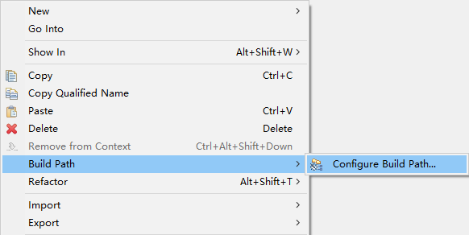

摘要：本文主要学习了什么是Servlet，以及如何使用Servlet进行开发。
随着互联网技术的发展，基于HTTP和HTML的web应用急速增长。早期的web应用主要用于浏览新闻等静态页面，用户通过HTTP协议请求服务器上的静态页面，服务器上的web服务器软件接收到请求后，读取URI标示的资源，再加上消息报头发送给客户端浏览器，浏览器负责解析HTML，将结果呈现出来。
然而随着时间发展，用户已经不满足于仅浏览静态页面。用户需要一些交互操作，获取一些动态结果。如果基于HTTP协议实现服务器端软件增强功能太过复杂，所以需要一些扩展机制来实现用户想要的功能。早期使用的Web服务器扩展机制是CGI（Common Gateway Interface，公共网关接口）。使用这种方法，用户单击某个链接或输入网址来访问CGI程序，web服务器收到请求后，运行该CGI程序，对用户请求进行处理，紧接着将处理结果并产生一个响应，该响应被返回给web服务器，web服务器对响应进行包装，以HTTP响应的方式返回给浏览器。
CGI程序在一定程度上解决了用户需求。不过还存在一些不足之处，如CGI程序编写困难，响应时间较长，以进程方式运行导致性能受限。于是1997年，SUN公司推出了Servlet技术，作为Java阵营的CGI解决方案。
Servlet是Server+Applet的拼接，它的本意是“服务器端的小程序”，指的是运行在Web应用服务器上的Java程序，与普通Java程序不同，它是运行在支持Java的应用服务器中的，可以对Web浏览器或其他HTTP客户端程序发送的请求进行处理。
从广义上来讲，Servlet规范是Sun公司制定的一套技术标准，包含与Web应用相关的一系列接口，是Web应用实现方式的宏观解决方案。而具体的Servlet容器负责提供标准的实现。
从狭义上来讲，Servlet指的是javax.servlet.Servlet接口及其子接口，也可以指实现了Servlet接口的实现类。
简单来说，Servlet就是用来接收访问服务器的请求，根据请求进行处理，然后返回给客户端处理后的结果。如下图所示：
Servlet对象与普通的Java对象不同，它可以处理Web浏览器或其他HTTP客户端程序发送的HTTP请求，但前提是把Servlet对象布置到Servlet容器中，也就是说，其运行需要Servlet容器的支持。
Servlet容器也叫做Servlet引擎，是Web服务器或应用程序服务器的一部分，用于为请求和响应提供网络服务，解码基于MIME的请求，格式化基于MIME的响应。
Servlet没有main方法，不能独立运行，它必须被部署到Servlet容器中，由容器来实例化和调用Servlet的方法，Servlet容器在Servlet的生命周期内包容和管理Servlet。在JSP技术推出后，管理和运行Servlet/JSP的容器也称为Web容器。
有了Servlet之后，用户通过单击某个链接或者直接在浏览器的地址栏中输入URL来访问Servlet，Web服务器接收到该请求后，并不是将请求直接交给Servlet，而是交给Servlet容器。Servlet容器实例化Servlet，调用Servlet的一个特定方法对请求进行处理，并产生一个响应。这个响应由Servlet容器返回给Web服务器，Web服务器包装这个响应，以HTTP响应的形式发送给Web浏览器。
通信支持：利用容器提供的方法，可以轻松的让Servlet与Web服务器对话，而不需要自己建立ServerSocket、监听某个端口、创建流等等。容器知道自己与Web服务器之间的协议，所以Servlet不用担心Web服务器和Web代码之间的API，只需要考虑如何在Servlet中实现业务逻辑（如处理一个订单）。
生命周期管理：Servlet容器控制着Servlet的生与死，它负责加载类、实例化和初始化Servlet，调用Servlet方法，以及使Servlet实例被垃圾回收，有了Servlet容器就不需要太多的考虑资源管理。
多线程支持：容器会自动为它所接收的每个Servlet请求创建一个新的Java线程。针对用户的请求，如果Servlet已经运行完相应的HTTP服务方法，这个线程就会结束。这并不是说不需要考虑线程安全性，其实还会遇到同步问题，不过这样能少做很多工作。
声明方式实现安全：利用Servlet容器，可以使用XML部署描述文件来配置和修改安全性，而不必将其硬编码写到Servlet类代码中。
JSP支持：Servlet容器负责将Jsp代码翻译为真正的Java代码。
根据Servlet容器工作模式的不同，可以将Servlet容器分为以下三类：
1）独立的Servlet容器
当我们使用基于Java技术的Web服务器时，Servlet容器作为构成Web服务器的一部分而存在。然而大多数的Web服务器并非基于Java，因此，就有了下面两种Servlet容器的工作模式。
2）进程内的Servlet容器
Servlet容器由Web服务器插件和Java容器两部分的实现组成。Web服务器插件在某个Web服务器内部地址空间中打开一个JVM（Java虚拟机），使得Java容器可以在此JVM中加载并运行Servlet。如有客户端调用Servlet的请求到来，插件取得对此请求的控制并将它传递（使用JNI技术）给Java容器，然后由Java容器将此请求交由Servlet进行处理。进程内的Servlet容器对于单进程、多线程的服务器非常适合，提供了较高的运行速度，但伸缩性有所不足。
3）进程外的Servlet容器
Servlet容器运行于Web服务器之外的地址空间，它也是由Web服务器插件和Java容器两部分的实现组成的。Web服务器插件和Java容器（在外部JVM中运行）使用IPC机制（通常是TCP/IP）进行通信。当一个调用Servlet的请求到达时，插件取得对此请求的控制并将其传递（使用IPC机制）给Java容器。进程外Servlet容器对客户请求的响应速度不如进程内的Servlet容器，但进程外容器具有更好的伸缩性和稳定性。
1）创建
在Servlet的生命周期中，仅执行一次用于创建Servlet的init()方法。当Servlet容器启动时会自动装载某些Servlet（需要在web.xml文件的servlet标签下添加 <loadstartup>1</load-on-startup> ），或者收到客户端发起的首次请求时也会自动装载Servlet，此外，当Servlet类文件被更新时也会重新加载Servlet。
Web服务器如果检查已经装载了该Servlet的实例对象，则直接使用该Servlet的实例对象，此处体现了单例，但是线程不安全。
Web服务器如果检查没有装载，则使用反射机制创建实例，再使用该实例调用init()方法进行初始化将该实例装载到内存。
2）提供服务
每当接受一个请求时，就会调用一次service()方法，这个方法要求传入一个请求对象Request和一个响应对象Response，这个方法是Servlet的核心方法。
每次服务器接收到一个Servlet请求时，服务器会产生一个新的线程并调用服务。service()方法检查HTTP请求类型（GET、POST、PUT、DELETE 等），并在适当的时候调用do方法。
3）销毁
当某些情况下，Web服务器会调用Servlet的destory()方法销毁Servlet。
当重新部署或者关闭Tomcat服务器时会销毁Servlet，将调用destroy()方法将该Servlet从服务器内存中删除，如果使用粗暴的方式关闭服务器就不会调用destroy()方法。
在web.xml里配置了Servlet的映射之后，如果通过地址访问了配置的映射地址，服务器就能根据配置找到对应的Servlet类，然后执行service()方法，并且将结果返回到浏览器。
在Eclipse里面创建一个动态的Web项目：
修改创建的项目名称，点击“Next”：
继续点击“Next”：
在页面上勾选创建web.xml文件，如果不勾选就需要我们自己创建，然后点击“Finish”：
至此，动态的Web项目就创建好了，下一步就是给项目配置Servlet容器，也就是Tomcat服务器。
在项目上右键，选择“Build Path”，然后再选择“Configure Build Path...”：

选择“Add Library...”：
选择“Server Runtime”，然后点击“Next”：
选择列表里的Tomcat服务器，点击“Finish”：
可以看到多了一个类库：
至此，动态的Web项目就创建完成了。
在Eclipse里可以看到刚刚创建好的项目：
Java Resource：Java源文件和用到的类库。
src：存放了Java的源文件，也就是编译前的代码。
Libraries：项目用到的类库。
WebContent：这个是Web项目的资源目录，包括了Web项目的所有信息。
META-INF：系统自动生成，存放系统描述信息。
WEB-INF：对于Web应用程序，此目录包括含支持的Web资源，包含web.xml文件以及classes目录和lib目录。
lib：存放了Web应用程序引用的支持jar文件。
classes：存放了Java编译后生成的字节码文件。
web.xml：Web应用的初始化配置文件，保存了全局配置。
创建一个类并实现Servlet接口：
1 public class TestServlet implements Servlet {
2 @Override
3 public ServletConfig getServletConfig() {
4 return null;
5 }
6
7 @Override
8 public String getServletInfo() {
9 return null;
10 }
11
12 @Override
13 public void service(ServletRequest req, ServletResponse res) throws ServletException, IOException {
14 System.out.println("service()方法被执行……");
15 }
16
17 @Override
18 public void init(ServletConfig config) throws ServletException {
19 System.out.println("init()方法被执行……");
20 }
21
22 @Override
23 public void destroy() {
24 System.out.println("destroy()方法被执行……");
25 }
26 }修改web.xml文件，添加Servlet标签及其映射：
1 <!-- 声明一个Servlet -->
2 <servlet>
3 <!-- 为Servlet指定一个名称以便于引用 -->
4 <servlet-name>TestServletName</servlet-name>
5 <!-- 注册Servlet实现类的全类名 -->
6 <servlet-class>com.TestServlet</servlet-class>
7 <!-- 设置Tomcat启动时加载Servlet -->
8 <load-on-startup>1</load-on-startup>
9 </servlet>
10
11 <!-- 建立一个从虚拟路径到Servlet之间的映射关系 -->
12 <servlet-mapping>
13 <!-- 引用Servlet名称 -->
14 <servlet-name>TestServletName</servlet-name>
15 <!-- 映射到Servlet的虚拟路径 -->
16 <url-pattern>/TestServletUrl</url-pattern>
17 </servlet-mapping>添加html文件，添加跳转到Servlet的路径连接：
1 <!DOCTYPE html>
2 <html>
3 <head>
4 <meta charset="UTF-8">
5 <title>Insert title here</title>
6 </head>
7 <body>
8 <a href="TestServletUrl">TestServlet</a>
9 </body>
10 </html>启动服务器可以可以看到Servlet随服务器的启动而执行了init()方法，点击超链接会看到执行了service()方法，关闭服务器可以看到执行了destroy()方法。